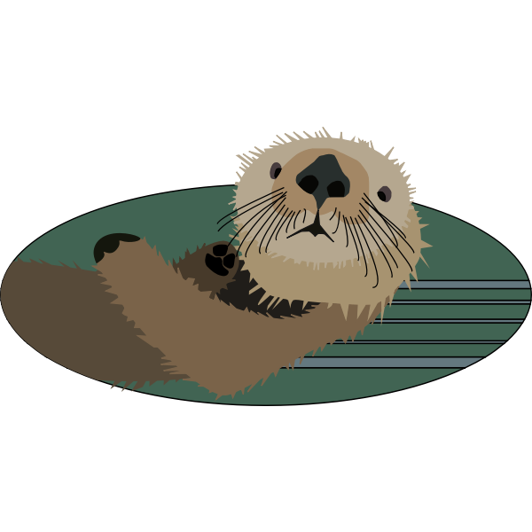

In this entry, I will explain how web tracking works in the real work. My goal is to provide an initial idea for the reader about web tracking. For this purpose, I will introduce techniques of device fingeprint and mitigations techniques that exist.
Introduction
First things first, I will int
https://github.com/samuelgoto/WebID#the-classification-problem
https://github.com/fedidcg/FedCM
If you have any recommendation/mistake/feedback, feel free to reach me twitter :)
References:
- Chromium project website
- Recommended: Chromium Overview Video
- Recommended: Chrome Comic Book